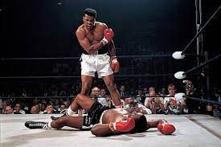

The greatest of all time

Muhammad second fight with joe frazier
Here's a time line of Muhammad Ali's life
- year 1942-Born in louisville,kentucky,united states
- year 1952-He began training as an amateur boxer
- year 1960-He won a gold medal in the light heavyweight division at the 1960 Summer Olympics
- year 1961-he became a Muslim
- year 1964- he renouned his name to Muhammad Ali
- year 1964- he got married and div.1966
- year 1971-he fought with Joe Frazier which was nicknamed as the "Fight of the century"
- year 1976-Ali participated in an exhibition bout in Tokyo against Japanese professional wrestler and martial artist Antonio Inoki
- year 1981-Ali retired from boxing and focused on religion
- year 2001-Ali bout with Parkinson's disease
- year 2016-dies at the age of 74
"Muhammad Ali is the greatest when it come to fight and is achievement can tell more"
if you have time,you should read more about this incredible human being on hiswikipedia